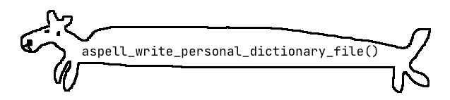
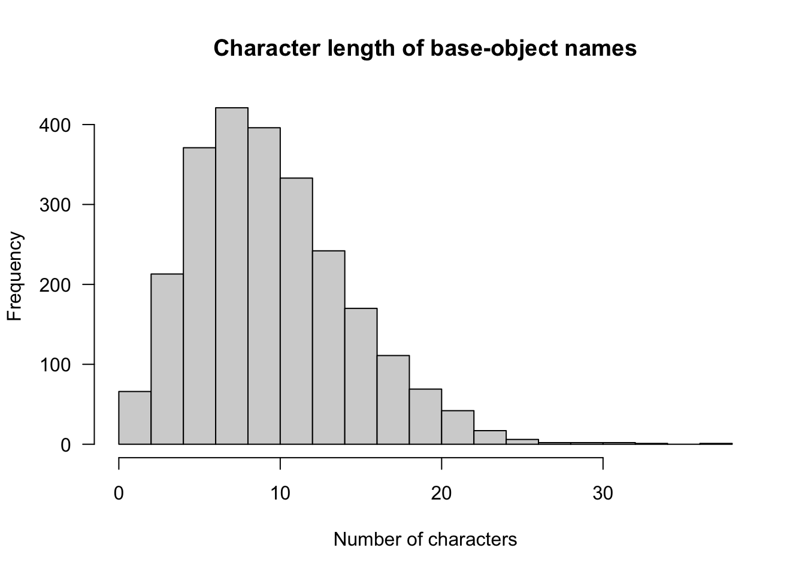
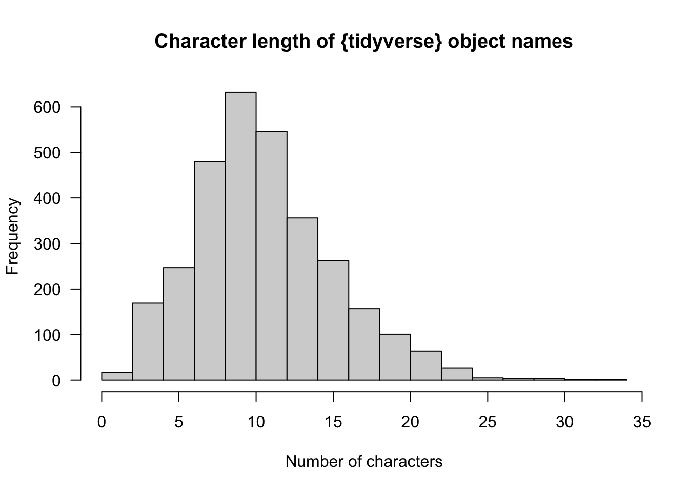

base_names <- sessionInfo()$basePkgs
base_names[1] "stats" "graphics" "grDevices" "utils" "datasets" "methods"
[7] "base" November 27, 2021

Use ls() on a package name in the form "package:base" to see all the objects it contains. I’ve done this to find the longest (and shortest) function names in base R and the {tidyverse} suite.
I try to keep to a few rules when creating function names, like:
get_badge() from {badgr}dh_*() functions from {dehex}r2cron() from {dialga}It can be tricky to be succinct. Consider the base R function suppressPackageStartupMessages()1: it’s a whopping 30 characters, but all the words are important. Something shortened, like suppPkgStartMsg(), wouldn’t be so clear.
It made me wonder: what’s the longest function name in R?2
But! It seems tricky and time consuming to find the longest function name from all R packages. CRAN alone has over 18,000 at time of writing.
A much easier (lazier) approach is to focus on some package subsets. I’ll look at base R and the {tidyverse}.
Certain R packages are built-in and attached by default on startup.
[1] "stats" "graphics" "grDevices" "utils" "datasets" "methods"
[7] "base" How can we fetch all the functions from these packages? We can use ls() to list all their objects, supplying the package name in the format "package:base", for example. Note that I said ‘objects’, not ‘functions’, since it will also return names that refer to things like datasets.
For fun, we can use this as an excuse to demo ‘lambda’ syntax and the dog’s balls approach to function-writing, both introduced in R v4.1.3
base_pkgs <- paste0("package:", base_names)
base_fns <- lapply(base_pkgs, ls) |>
setNames(base_names) |>
lapply(\(object) as.data.frame(object)) |>
(\(x) do.call(rbind, x))() # the balls ()()
base_fns$package <- gsub("\\.\\d{,4}$", "", row.names(base_fns))
row.names(base_fns) <- NULL
base_fns$nchar <- nchar(base_fns$object)
base_fns <- base_fns[order(-base_fns$nchar), ]Of the 2465 objects across these packages, a quick histogram shows that the most frequent character length is under 10, with a tail stretching out to over 30.
hist(
base_fns$nchar,
main = "Character length of base-object names",
xlab = "Number of characters",
las = 1
)
Here’s the top 10 by character length.
base_fns_top <- base_fns[order(-base_fns$nchar), ]
rownames(base_fns_top) <- seq(length = nrow(base_fns_top))
head(base_fns_top, 10) object package nchar
1 aspell_write_personal_dictionary_file utils 37
2 getDLLRegisteredRoutines.character base 34
3 getDLLRegisteredRoutines.DLLInfo base 32
4 reconcilePropertiesAndPrototype methods 31
5 suppressPackageStartupMessages base 30
6 as.data.frame.numeric_version base 29
7 as.character.numeric_version base 28
8 print.DLLRegisteredRoutines base 27
9 as.data.frame.model.matrix base 26
10 conditionMessage.condition base 26So there are four objects with names longer than suppressPackageStartupMessages(), though they are rarely used as far as I can tell. The longest is aspell_write_personal_dictionary_file(), which has 37(!) characters. It’s part of the spellcheck functions in {utils}.
It’s interesting to me that it follows some of those rules for function naming that I mentioned earlier. It has a verb, is descriptive and uses a prefix for easier autocomplete; ‘aspell’ refers to the GNU open-source Aspell spellchecker on which it’s based.
I’m intrigued that the function uses snake_case rather than camelCase or dot.case, which seem more prevalent in base functions. You could argue then that the underscores have ‘inflated’ the length by four characters. Similarly, the prefix adds another six characters. So maybe the function could be simplified to writePersonalDictionaryFile(), which is merely 27 characters.
What about shortest functions? There are many one-character functions in base R.
[1] "-" ":" "!" "?" "(" "[" "{" "@" "*" "/" "&" "^" "+" "<" "=" ">" "|" "~" "$"
[20] "c" "C" "D" "F" "I" "q" "t" "T"Some of these will be familiar, like c() to concatenate and t() to transpose. You might wonder why operators and brackets are in here. Remember: everything in R is a function, so `[`(mtcars, "hp") is the same as mtcars["hp"]. I have to admit that stats::C() and stats::D() were new to me.
How about object names from the {tidyverse}?
To start, we need to attach the packages. Running library(tidyverse) only loads the core packages of the tidyverse, so we need another approach to attach them all.
One method is to get the a vector of the package names with the tidyverse_packages() function and pass it to p_load() from {pacman}, which prevents the need for a separate library() call for each one.4
First, here’s the tidyverse packages.
ℹ️ Update
I updated this post in July 2023. The {lubridate} package is now installed as part of the tidyverse and many new functions have appeared across the multitude of packages in the metapackage.
# install.packages("tidyverse") # if not installed
suppressPackageStartupMessages( # in action!
library(tidyverse)
)
tidy_names <- tidyverse_packages()
tidy_names [1] "broom" "conflicted" "cli" "dbplyr"
[5] "dplyr" "dtplyr" "forcats" "ggplot2"
[9] "googledrive" "googlesheets4" "haven" "hms"
[13] "httr" "jsonlite" "lubridate" "magrittr"
[17] "modelr" "pillar" "purrr" "ragg"
[21] "readr" "readxl" "reprex" "rlang"
[25] "rstudioapi" "rvest" "stringr" "tibble"
[29] "tidyr" "xml2" "tidyverse" And now to load them all.
Once again we can ls() over packages in the form "package:dplyr". Now the {tidyverse} is loaded, we might as well use it to run the same pipeline as we did for the base packages.
So we’re looking at even more packages this time, since the whole tidyverse contains 3070 of them.
The histogram is not too dissimilar to the one for base packages, though the tail is shorter, it’s arguably more normal-looking and the peak is perhaps slightly closer to 10. The latter could be because of more liberal use of snake_case.
hist(
tidy_fns$nchar,
main = "Character length of {tidyverse} object names",
xlab = "Number of characters",
las = 1
)
Here’s the top 10 by character length.
# A tibble: 11 × 3
package object nchar
<chr> <chr> <int>
1 rlang ffi_standalone_check_number_1.0.7 33
2 googlesheets4 vec_ptype2.googlesheets4_formula 32
3 googlesheets4 vec_cast.googlesheets4_formula 30
4 cli cli_progress_builtin_handlers 29
5 rstudioapi getRStudioPackageDependencies 29
6 rstudioapi registerCommandStreamCallback 29
7 rlang ffi_standalone_is_bool_1.0.7 28
8 dbplyr supports_star_without_alias 27
9 rstudioapi launcherPlacementConstraint 27
10 cli ansi_has_hyperlink_support 26
11 ggplot2 scale_linewidth_continuous 26Well there you are: ffi_standalone_check_number_1.0.7() from {rlang} wins the prize with 33 characters. What does it do? The full documentation is literally ‘Internal API for standalone-types-check’. Okey doke.
Intriguingly, the next two are both from {googlesheets4}. The help pages say they’re ‘internal {vctrs} methods’. The names of these are long because of the construction: the first part tells us the method name, e.g. vec_ptype2, and the second part tells us that they apply to the googlesheets4_formula S3 class.
So maybe these don’t really count because they would be executed as as vec_ptype2() and vec_cast()? And they’re inflated because they contain the package name, {googlesheets4}, which is quite a long one (13 characters). That would leave cli::cli_progress_builtin_handlers() and rstudioapi::getRStudioPackageDependencies() as the next longest (29 characters). The latter uses camelCase—which is typical of the {rstudioapi} package—so isn’t bulked out by underscores.
On the other end of the spectrum, there’s only one function with one character: dplyr::n(). I think it makes sense to avoid single-character functions in non-base packages, because they aren’t terribly descriptive. n() can at least be understood to mean ‘number’.
Instead, here’s all the two-letter functions from the {tidyverse}. Note that many of these are from {lubridate} and are shorthand expressions that make sense in context, like hm() for hour-minute. You can also see some of {rlang}’s operators creep in here, like bang-bang (!!) and the walrus (:=).5
# A tibble: 16 × 3
package object nchar
<chr> <chr> <int>
1 cli no 2
2 dplyr do 2
3 dplyr id 2
4 lubridate am 2
5 lubridate hm 2
6 lubridate ms 2
7 lubridate my 2
8 lubridate pm 2
9 lubridate tz 2
10 lubridate ym 2
11 lubridate yq 2
12 magrittr or 2
13 rlang := 2
14 rlang !! 2
15 rlang ll 2
16 rlang UQ 2Many of these are due to {lubridate} using single letters to represent time periods, like hm is ‘hour minute’. You can also see some symbols from {rlang}, like the good ol’ :=, or ‘walrus’ operator.
Both the {dplyr} functions here are no longer intended for use. I’m sad especially for dplyr::do(): the help page says it ‘never really felt like it belong[ed] with the rest of dplyr’. Sad.
In memoriam:
do().
Last rendered: 2023-07-04 20:08:24 BSTR version 4.3.1 (2023-06-16)
Platform: aarch64-apple-darwin20 (64-bit)
Running under: macOS Ventura 13.2.1
Matrix products: default
BLAS: /Library/Frameworks/R.framework/Versions/4.3-arm64/Resources/lib/libRblas.0.dylib
LAPACK: /Library/Frameworks/R.framework/Versions/4.3-arm64/Resources/lib/libRlapack.dylib; LAPACK version 3.11.0
locale:
[1] en_US.UTF-8/en_US.UTF-8/en_US.UTF-8/C/en_US.UTF-8/en_US.UTF-8
time zone: Europe/London
tzcode source: internal
attached base packages:
[1] stats graphics grDevices utils datasets methods base
other attached packages:
[1] xml2_1.3.4 rvest_1.0.3 rstudioapi_0.14
[4] rlang_1.1.1 reprex_2.0.2 readxl_1.4.2
[7] ragg_1.2.5 pillar_1.9.0 modelr_0.1.11
[10] magrittr_2.0.3 jsonlite_1.8.7 httr_1.4.6
[13] hms_1.1.3 haven_2.5.2 googlesheets4_1.1.1
[16] googledrive_2.1.1 dtplyr_1.3.1 dbplyr_2.3.2
[19] cli_3.6.1 conflicted_1.2.0 broom_1.0.5
[22] pacman_0.5.1 lubridate_1.9.2 forcats_1.0.0
[25] stringr_1.5.0 dplyr_1.1.2 purrr_1.0.1
[28] readr_2.1.4 tidyr_1.3.0 tibble_3.2.1
[31] ggplot2_3.4.2 tidyverse_2.0.0
loaded via a namespace (and not attached):
[1] gtable_0.3.3 xfun_0.39 htmlwidgets_1.6.2 gargle_1.5.1
[5] tzdb_0.4.0 vctrs_0.6.3 tools_4.3.1 generics_0.1.3
[9] fansi_1.0.4 pkgconfig_2.0.3 data.table_1.14.8 lifecycle_1.0.3
[13] compiler_4.3.1 textshaping_0.3.6 munsell_0.5.0 htmltools_0.5.5
[17] yaml_2.3.7 cachem_1.0.8 tidyselect_1.2.0 digest_0.6.31
[21] stringi_1.7.12 fastmap_1.1.1 grid_4.3.1 colorspace_2.1-0
[25] utf8_1.2.3 withr_2.5.0 scales_1.2.1 backports_1.4.1
[29] timechange_0.2.0 rmarkdown_2.23 cellranger_1.1.0 memoise_2.0.1
[33] evaluate_0.21 knitr_1.43.1 glue_1.6.2 DBI_1.1.3
[37] R6_2.5.1 systemfonts_1.0.4 fs_1.6.2